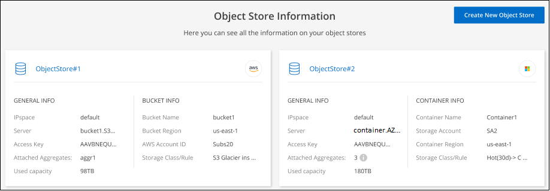
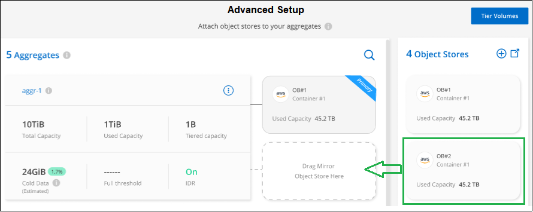
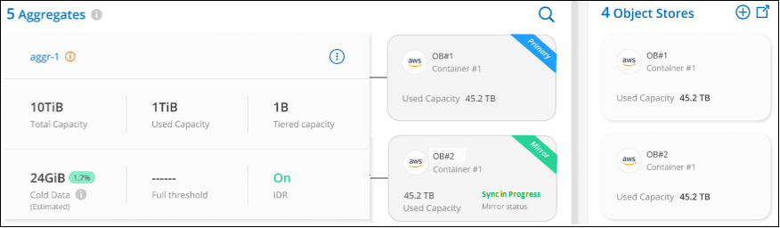

Inizia subito
Inizia subito
Gestione dello storage a oggetti utilizzato per il tiering dei dati
 Suggerisci modifiche
Suggerisci modifiche
Dopo aver configurato i cluster ONTAP on-premise per il Tier dei dati su uno storage a oggetti specifico, è possibile eseguire ulteriori attività di storage a oggetti. È possibile aggiungere nuovo storage a oggetti, eseguire il mirroring dei dati a livelli in uno storage a oggetti secondario, sostituire lo storage a oggetti primario e mirror, rimuovere un archivio a oggetti mirrorati da un aggregato e molto altro ancora.
Visualizzazione degli archivi di oggetti configurati per un cluster
È possibile visualizzare tutti gli archivi di oggetti configurati per il cluster e a quali aggregati sono collegati. BlueXP Tiering fornisce queste informazioni per ogni cluster.
-
Dalla pagina Clusters, fare clic sull'icona del menu di un cluster e selezionare Info archivio oggetti.
-
Esaminare i dettagli sugli archivi di oggetti.
Questo esempio mostra un archivio di oggetti Amazon S3 e Azure Blob collegato a diversi aggregati di un cluster.

Aggiunta di un nuovo archivio di oggetti
È possibile aggiungere un nuovo archivio di oggetti che sarà disponibile per gli aggregati nel cluster. Una volta creato, è possibile allegarlo a un aggregato.
-
Dalla pagina Clusters, fare clic sull'icona del menu di un cluster e selezionare Info archivio oggetti.
-
Dalla pagina Object Store Information (informazioni archivio oggetti), fare clic su Create New Object Store (Crea nuovo archivio oggetti).

Viene avviata la procedura guidata di archiviazione degli oggetti. L'esempio seguente mostra come creare un archivio di oggetti in Amazon S3.
-
Define Object Storage Name: Immettere un nome per lo storage a oggetti. Deve essere univoco rispetto a qualsiasi altro storage a oggetti utilizzato con gli aggregati di questo cluster.
-
Seleziona provider: Selezionare il provider, ad esempio Amazon Web Services, quindi fare clic su continua.
-
Completare la procedura riportata nelle pagine Create Object Storage:
-
S3 bucket: Aggiungi un nuovo bucket S3 o seleziona un bucket S3 esistente che inizia con il prefisso fabric-pool. Quindi, immettere l'ID account AWS che fornisce l'accesso al bucket, selezionare la regione del bucket e fare clic su continua.
Il prefisso fabric-pool è necessario perché il criterio IAM per il connettore consente all'istanza di eseguire azioni S3 sui bucket denominati con quel prefisso esatto. Ad esempio, è possibile chiamare il bucket S3 fabric-pool-AFF1, dove AFF1 è il nome del cluster.
-
Storage Class Lifecycle: Il tiering BlueXP gestisce le transizioni del ciclo di vita dei dati a più livelli. I dati iniziano nella classe Standard, ma è possibile creare una regola per applicare una classe di archiviazione diversa ai dati dopo un certo numero di giorni.
Selezionare la classe di archiviazione S3 a cui si desidera trasferire i dati suddivisi in livelli e il numero di giorni prima dell'assegnazione dei dati a tale classe, quindi fare clic su continua. Ad esempio, la schermata riportata di seguito mostra che i dati a livelli vengono assegnati alla classe Standard-IA dalla classe Standard dopo 45 giorni di archiviazione degli oggetti.
Se si sceglie Mantieni i dati in questa classe di storage, i dati rimangono nella classe di storage Standard e non vengono applicate regole. "Vedere classi di storage supportate".

Si noti che la regola del ciclo di vita viene applicata a tutti gli oggetti nel bucket selezionato.
-
Credenziali: Immettere l'ID della chiave di accesso e la chiave segreta per un utente IAM che dispone delle autorizzazioni S3 richieste, quindi fare clic su continua.
L'utente IAM deve trovarsi nello stesso account AWS del bucket selezionato o creato nella pagina S3 bucket. Vedere le autorizzazioni richieste nella sezione relativa all'attivazione del tiering.
-
Rete cluster: Selezionare l'IPSpace che ONTAP deve utilizzare per connettersi allo storage a oggetti e fare clic su continua.
La selezione dell'IPSpace corretto garantisce che il tiering BlueXP possa configurare una connessione da ONTAP allo storage a oggetti del provider di cloud.
-
Viene creato l'archivio di oggetti.
Ora è possibile collegare l'archivio di oggetti a un aggregato nel cluster.
Allegare un secondo archivio di oggetti a un aggregato per il mirroring
È possibile collegare un secondo archivio di oggetti a un aggregato per creare un mirror FabricPool per tierare i dati in modo sincrono a due archivi di oggetti. È necessario disporre di un archivio di oggetti già collegato all'aggregato. "Scopri di più sui mirror FabricPool".
Quando si utilizza una configurazione MetroCluster, è consigliabile utilizzare archivi di oggetti nel cloud pubblico che si trovano in diverse zone di disponibilità. "Scopri di più sui requisiti MetroCluster nella documentazione ONTAP".
Si noti che quando si utilizza StorageGRID come archivio di oggetti in una configurazione MetroCluster, entrambi i sistemi ONTAP possono eseguire il tiering FabricPool su un singolo sistema StorageGRID. Ogni sistema ONTAP deve eseguire il Tier dei dati in diversi bucket.
-
Dalla pagina Clusters, fare clic su Advanced setup (Configurazione avanzata) per il cluster selezionato.

-
Dalla pagina Advanced Setup, trascinare l'archivio di oggetti che si desidera utilizzare nella posizione dell'archivio di oggetti mirror.

-
Nella finestra di dialogo Allega archivio oggetti, fare clic su Allega e il secondo archivio oggetti viene collegato all'aggregato.

Lo stato Mirror viene visualizzato come "Sync in Progress" (sincronizzazione in corso) durante la sincronizzazione dei 2 archivi di oggetti. Al termine della sincronizzazione, lo stato diventa "sincronizzato".
Sostituire l'archivio di oggetti primario e mirror
È possibile sostituire l'archivio di oggetti primario e mirror con un aggregato. Il mirror dell'archivio di oggetti diventa il principale e il primario originale diventa il mirror.
-
Dalla pagina Clusters, fare clic su Advanced setup (Configurazione avanzata) per il cluster selezionato.
-
Dalla pagina Advanced Setup (Configurazione avanzata), fare clic sull'icona del menu dell'aggregato e selezionare Swap Destinations (Destinazioni di scambio).

-
Approvare l'azione nella finestra di dialogo e gli archivi di oggetti primario e mirror vengono scambiati.
Rimozione di un archivio di oggetti mirror da un aggregato
È possibile rimuovere un mirror FabricPool se non è più necessario replicare in un archivio di oggetti aggiuntivo.
-
Dalla pagina Clusters, fare clic su Advanced setup (Configurazione avanzata) per il cluster selezionato.
-
Dalla pagina Advanced Setup (Configurazione avanzata), fare clic sull'icona del menu dell'aggregato e selezionare Unmirror Object Store (Annulla mirror archivio oggetti).

L'archivio di oggetti mirror viene rimosso dall'aggregato e i dati a più livelli non vengono più replicati.

|
Quando si rimuove l'archivio di oggetti mirror da una configurazione MetroCluster, viene richiesto se si desidera rimuovere anche l'archivio di oggetti primario. È possibile scegliere di mantenere l'archivio di oggetti primario collegato all'aggregato o di rimuoverlo. |
Migrazione dei dati a più livelli a un altro cloud provider
BlueXP Tiering consente di migrare facilmente i dati a più livelli a un altro cloud provider. Ad esempio, se desideri passare da Amazon S3 a Azure Blob, puoi seguire i passaggi elencati in precedenza in questo ordine:
-
Aggiungere un archivio di oggetti Azure Blob.
-
Collegare questo nuovo archivio di oggetti come mirror all'aggregato esistente.
-
Sostituire gli archivi di oggetti primari e mirror.
-
Annulla il mirroring dell'archivio di oggetti Amazon S3.